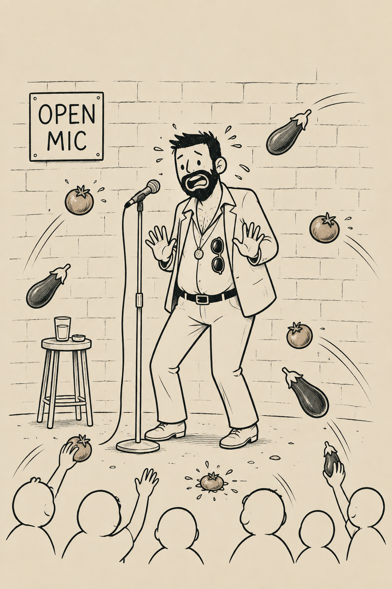

Torrente cinco
Nico dijo hace unos días: «Mamá, me encantan las tortillas que haces. Están casi tan ricas como las del cole». Podría continuar con alguna suerte de chiste machista, como: «la verdad es que cocina tan mal que yo creo que, si algún día la mato, no me condenan».
El problema es que a nadie le haría gracia un chiste de este tipo. Ya no hacen gracia los sketches en los que alguien bromea sobre pegar a una mujer. Y de aquí parte mi reflexión sobre Torrente 5: creo que el éxito de una película de este tipo mide, a su vez, el fracaso relativo de la sociedad.
Una sociedad avanza cuando ese recurso cómico de enmienda a la totalidad progre deja de hacer gracia incluso a la gente más reaccionaria. Por suerte, los chistes sobre maltrato, violación o pederastia han dejado de hacer gracia, mientras que siguen funcionando los de discriminación, mariquitas, negros…
Pero ¡ojo! Torrente no convierte a Santiago Segura en fascista. Cualquier forma de hacer comedia es lícita y hay obras que podríamos atribuir a este género de «comedia barata» que considero auténticas obras de arte.
Hay que separar la obra del autor. Los sietes de Nico parecen esvásticas y no permitiré que nadie le llame fascista. Lo que convierte a S. S. en un personaje deleznable sería, en todo caso, su persona y no sus pelis.
Digamos que, en mi cabeza, S. S. pertenece a esa corriente de la alta cincuentena cuyo pensamiento político podría resumirse en: «Yo voté a Felipe González, pero la izquierda de ahora no me representa, así que quiero votar a un partido que eche a los moros».
Pero bueno, cambiemos de tema. Acaba el mercado de fichajes y parece que Julián se queda. Menos mal. Durante el verano se especuló con la posibilidad de que Mason Greenwood, presunto maltratador, fichase por el Atléti.
Aunque, bueno, acabaremos perdonando a Julián, así que seguro que, si hubiese marcado suficientes goles, habríamos acabado perdonando que el otro le diese un par de guascas a su mujer de vez en cuando, jajaja.
